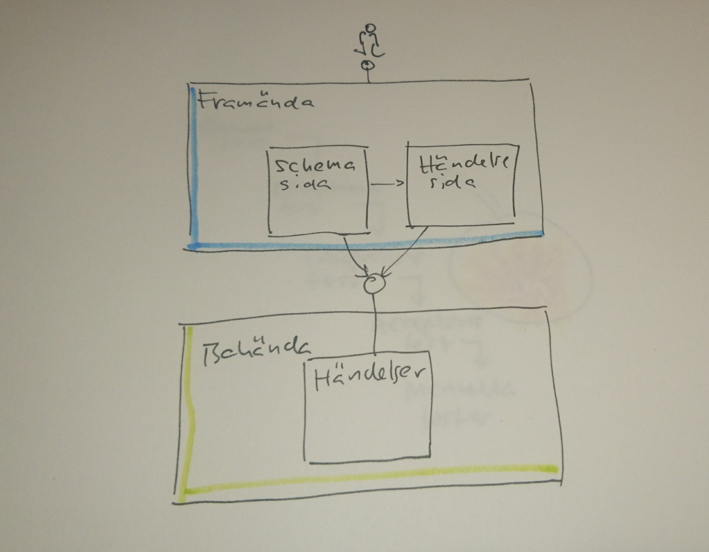
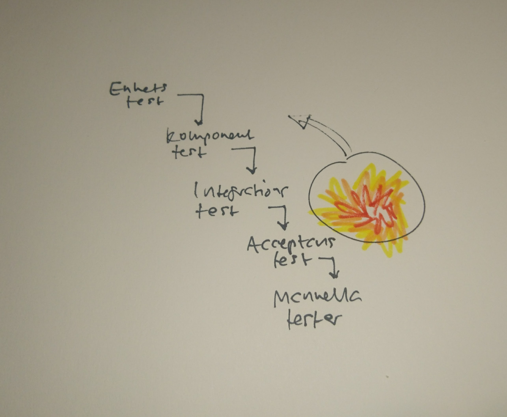
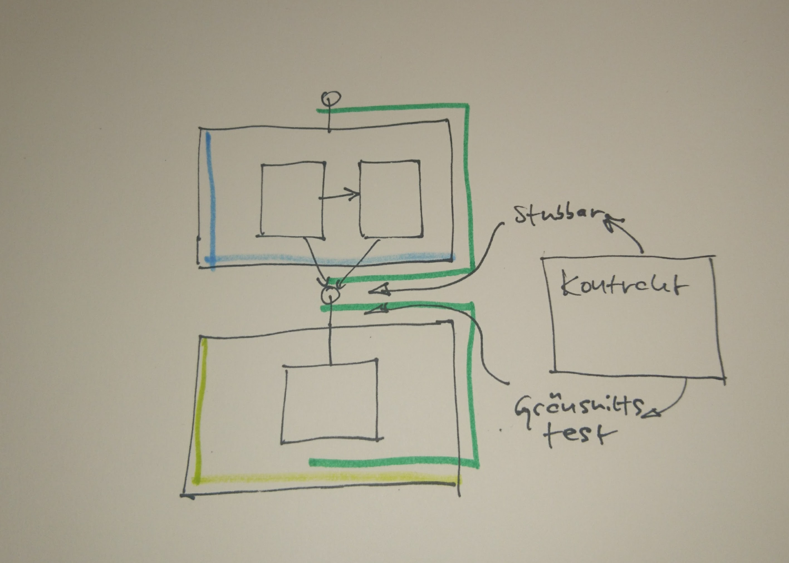

Hur ser systemet ut?

Två grupper, minst.
Acceptans och manuella
Instabila testmiljöer.
När upptäcker vi fel?

Konsumentkraft

Kommer från konsumenten, körs av producenten.
Skriv ett test mot konsumenten
Importera till producenten
Importera till konsumenten
Om vi ändrar producenten då?
Intryck
Schysst DSL
Halvbra felmeddelanden
Mycket annotationer är det
Bara JVM
Men vänta, det finns mer!
Messaging